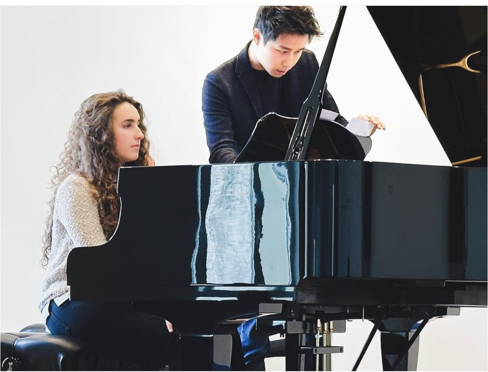
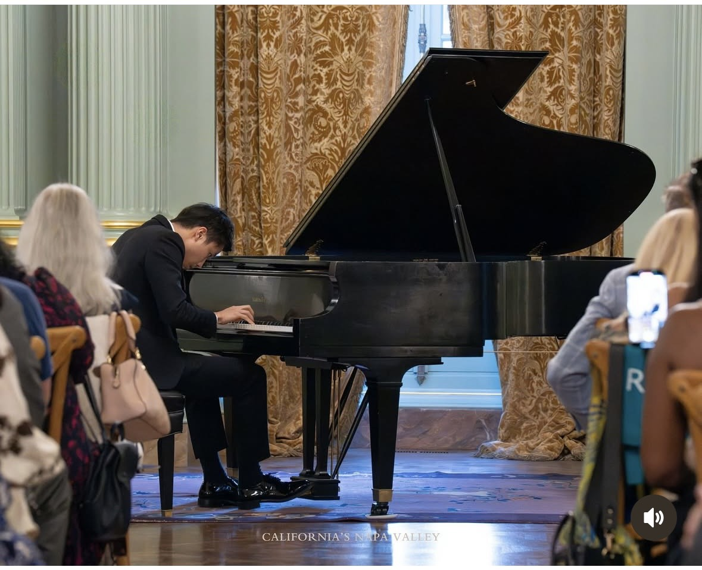
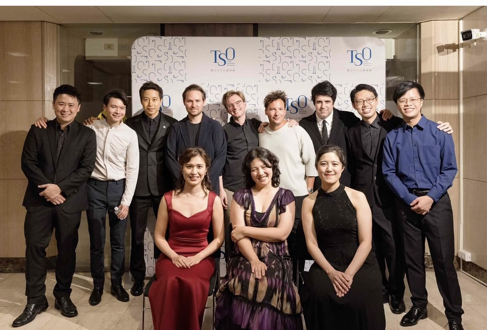

Opus Formosa is a premier global platform redefining the role of culture in an automated world. We bridge the gap between technical virtuosity and real-world influence, educating the next generation of young artists to lead a movement of authentic human connection and social impact.
Newsletter
Stay in the Loop
Get the latest news and exclusive updates from Opus Formosa
Thank you for subscribing! We'll be in touch.
Artistic Director's Note
Why Opus Formosa
They say it takes 10,000 hours to master a craft. By my early thirties, I had spent more than 50,000 hours at the piano.
From my training at Juilliard and Curtis to performing over a thousand concerts, my existence was centered on the craftsmanship of the piano in the practice room and the energy of the stage. I studied theory and history, and I obsessed over historical recordings to learn from the past. I spent hours asking myself how to play from one note to the next, how to connect one phrase to another, and how to find the right balance in a single chord. I absolutely loved this process and was consumed by it; my passion for bringing these masterpieces to life made the loneliness of the practice room worthwhile.
Then, during the pandemic, the music stopped.
Without stages or audiences, I looked at those 50,000 hours and struggled to find their meaning. While other musicians posted videos online, I couldn't bring myself to do it. Without the life of a performer, I didn't know who I was. I felt lost.
In late 2023, I returned to the stage to perform for 4,500 people at the Rady Shell in San Diego. It was a major moment, but as I walked offstage, something was still missing. In the quiet of the wings, I had an epiphany:
Without people, there is no music.
For decades, I was trained to serve the composer and the score. But I realized that music doesn't live in a manuscript or in the hammers of a piano. It lives in the community of listeners. It lives on the bridge between the performer and the person in the third row.
I grew up as an only child, constantly moving—from Los Angeles to Taipei, New Jersey, New York, and Philadelphia. Later, my career kept me a nomad, traveling from Little Rock and Savannah to Perth, Berlin, Bilbao, Shanghai, and Tokyo. Looking back, the most meaningful part of that journey wasn't the applause; it was the people who became my friends and family along the way.
That is why I started Opus Formosa.
The next phase of my career isn't about how perfectly I can play; it's about how well I can connect. Through new festivals in the Basque Country and Taiwan, I am using music as a platform to unite the people I've met. We support young artists and curate experiences through special programming—not just for the sake of art, but for the sake of human connection.
I spent 50,000 hours learning how to play. Now, I'm spending my life learning how to listen—to the music, and to you.
— Steven Lin, Artistic Director



The Problem
The Dual Crisis
We are solving two of the most pressing socio-cultural challenges of the 21st century.
The Conservatory Gap
Traditional conservatories produce technically flawless musicians who are unprepared for the marketplace. They graduate with elite skills but lack the entrepreneurship, branding, and social intelligence required to build a sustainable livelihood.
Societal Isolation
In an era of AI and digital saturation, society is increasingly "connected" yet deeply isolated. Communities are starved for the intimacy, depth, and shared experiences that only in-person cultural exchanges can provide.
The Solution
The Salon Series
We move the stage from the distant concert hall into the heart of the community—Museums, Galleries, Wineries, Country Clubs, and Historical Venues.
Applied Artist Development
Emerging artists receive hands-on education—through masterclasses and live settings—in communication, audience engagement, and networking. The Salon Series serves as their real-world incubator.
Community Integration
We curate environments where business leaders, creatives, and local residents engage face-to-face, replacing screen time with high-value interpersonal connection.
Barrier-Free Access
All Salon concerts are completely free for the community, democratizing access to excellence and re-establishing the artist as a vital social anchor.
The Fellowship
Where Virtuosity
Meets the World
The Opus Formosa Fellowship is an intensive residency for exceptional emerging artists—a rare space where technical mastery is only the beginning.
Modeled after the great American summer institutions—Marlboro, Aspen, Perlman—our program immerses young musicians in the full breadth of artistic life: side-by-side performance with established masters, rigorous mentorship in communication and audience engagement, and the entrepreneurial tools needed to sustain a meaningful career.
We believe in connection over competition. The most important skill an artist can develop is not in the practice room—but in the room.
- Side-by-side performance with international masters
- Masterclasses in communication, branding, and the business of music
- A noncompetitive environment that safeguards each artist's individual voice
- Real-world performance experience in intimate, high-stakes salon settings
Global Footprint
Taiwan · Basque · World
Our flagship festivals in Basque Country and Taiwan serve as our ultimate proving grounds. In these key markets, our educational mission meets the public stage, demonstrating at scale that music is a powerful catalyst for human connection.
Supporting Our Mission
An Investment in Social Architecture
Your contribution delivers returns across three strategic pillars.
Artist Acceleration
An initiative made by musicians for musicians—directly funding stipends, travel, and business education to turn virtuosos into self-sustaining entrepreneurs.
Quantifiable Impact
Measurable returns through attendance data, venue partnerships, and audience demographic growth.
Cultural Legacy
A visible leadership role in safeguarding human-centric art in an increasingly automated world.